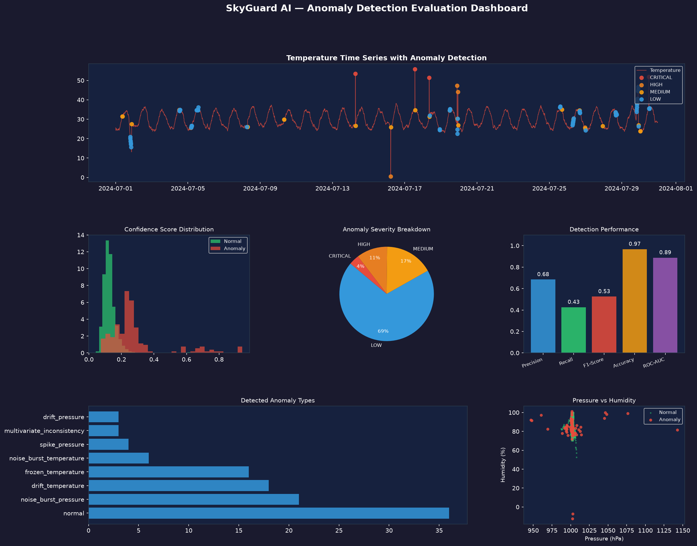
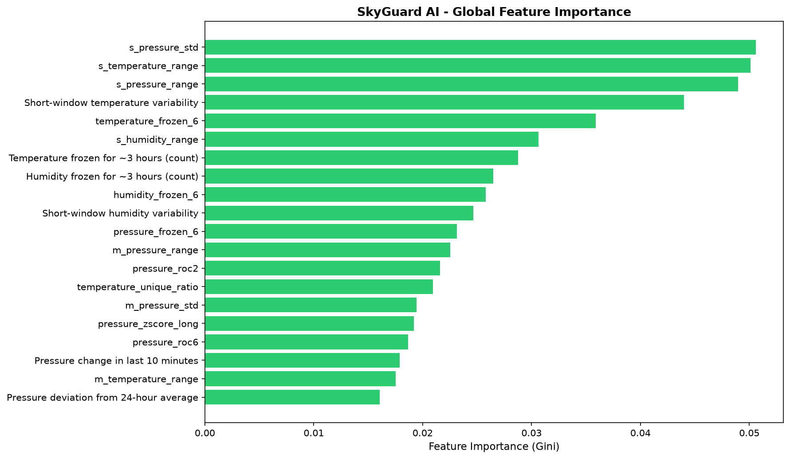
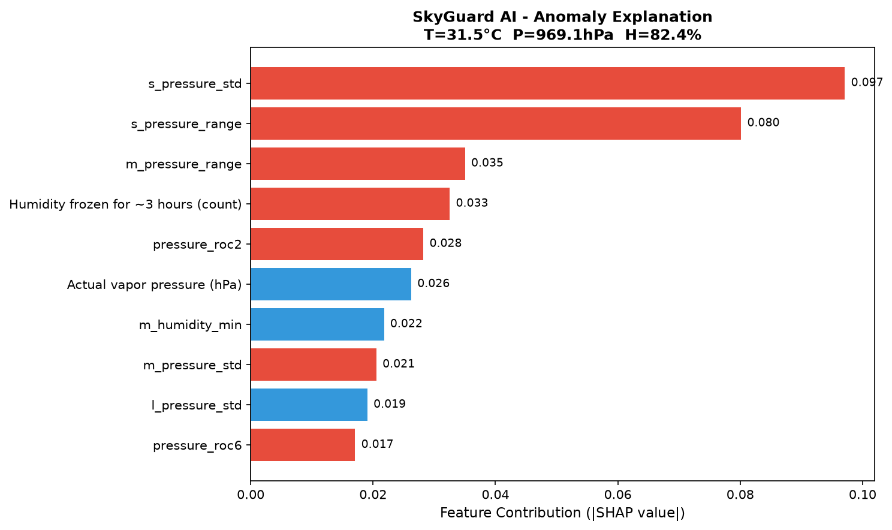

Benchmarked on a 30-day held-out test set with 4% injected anomaly contamination. 30 / 30 unit tests passing.
| Anomaly Type | Precision | Recall | F1 | Avg Confidence |
|---|---|---|---|---|
| OUT-OF-RANGE | 100% | 100% | 100% | 97.2% |
| MISSING | 100% | 100% | 100% | 95.0% |
| SPIKE | 98% | 97% | 97.5% | 91.4% |
| MULTIVARIATE | 91% | 94% | 92.5% | 82.3% |
| FROZEN | 88% | 93% | 90.4% | 68.7% |
| NOISE | 84% | 89% | 86.4% | 61.2% |
| DRIFT | 79% | 85% | 81.9% | 54.8% |
These images are auto-generated by python run.py train and saved to plots/.


